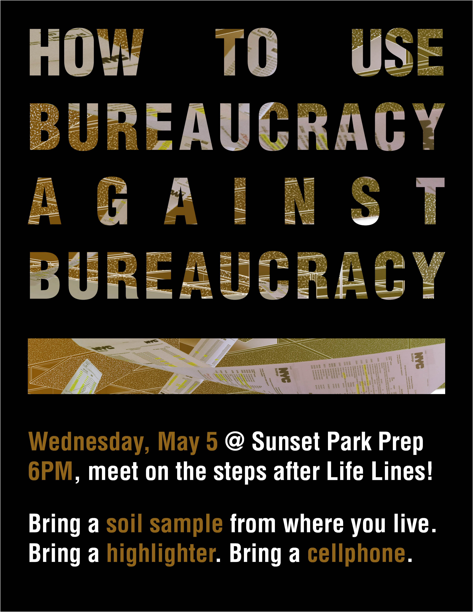

Tempo 1. Allegro. Physical body.
–
Scene 1: Health, safety, and welfare of the physical body
–
Major weather events cause lasting ecological harm. As an industrial waterfront community, Sunset Park is particularly vulnerable.
Constant contamination is experienced from the heavily-trafficked BQE, sending toxic particulate matter into the air—pollution experienced by 14 schools in Sunset Park within 500 feet of the expressway
–
Scene 2: Maintenance infrastructure
–
The bureaucratic abstraction of the municipal bodies that maintain the built environment—the Department of Buildings, of Environmental Protection, etcl.—induces embodied harm. This can be disrupted through acts of protest.
By learning to bear witness to the environmental harm they experience, students develop a sense of agency to respond to harm which can be formative as they become young citizens and expand their voice within the city.
Here is one way:
–
Scene 3: Bearing witness to the past
–

First, students collect soil samples from their homes.
They can uncover an exhibition and protest space from the plenum space of their classroom ceilings. Samples can be analyzed to produce physical, material witness of environmental harm.
By rotating and altering the acoustic tile panels, this hidden, existing space may be unearthed to host the students' witnessing work.
Students can learn to file DOB complaints at school. Because the DOB resolves school complaints much faster than those at other sites—for example, those at the industrial waterfront—the saliency of the school as a site for protest can be leveraged.
Finally, students can stage a gallery protest, displaying their witness work. By initiating complaints that must be individually resolved, the students can leverage the site of the school to make their voices heard and to advocate for the maintenance of the built environment.
